H. OVERIGE AANDUIDINGEN
H.1 | Kilometrering | ||
a | Kilometeraanduiding | 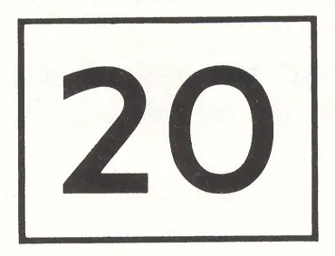 | |
b | Hectometeraanduiding | 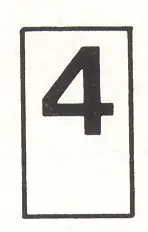 | |
H.2 | Bewegwijzering | ||
2.1 | Aanduiding hoofddoelen Hierop kunnen zowel plaatsnamen als vaarwegnamen zijn vermeld. | ||
a | Vooraanduiding (vóór een vertakking) | 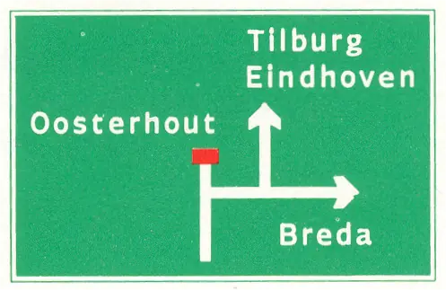 | |
b | Beslissingsaanduiding (ter plaatse van een vertakking) | 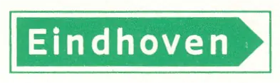 | |
2.2 | Aanduiding specifieke doelen Deze verwijzen naar havens, losplaatsen, jachthavens, e.d. | ||
a | Vooraanduiding (vóór een vertakking) | 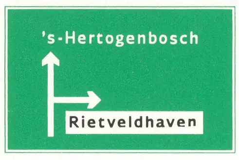 | |
b | Beslissingsaanduiding (ter plaatse van een vertakking) ) | 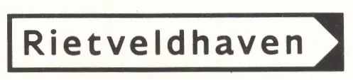 | |
2.3 | Aanduiding omleidingen | 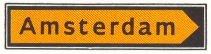 | |
2.4 | Naamgeving vaarwater of object (haven, brug, sluis, e.d. | ||
H.3 | Spui- en inlaattekens | ||
a | Er wordt gespuid | 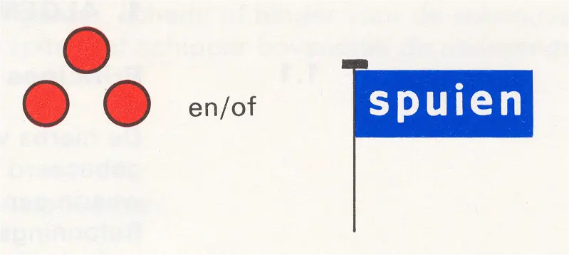 | |
b | Er wordt ingelaten | 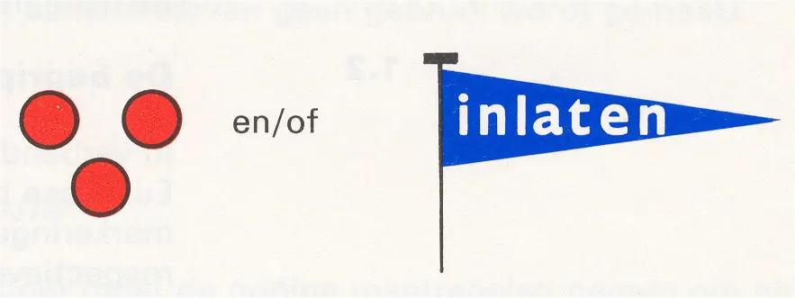 | |
c | Er zal weldra worden gespuid/ingelaten en/of ingelaten | 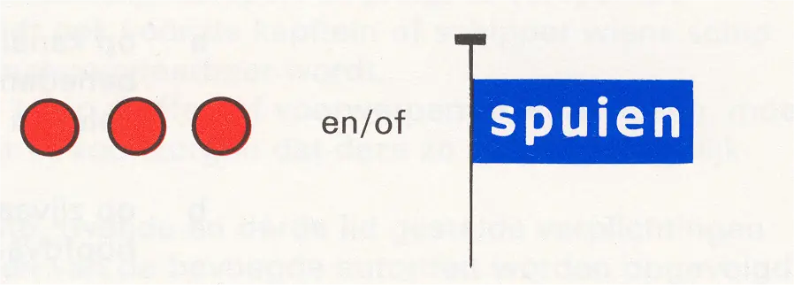 | |
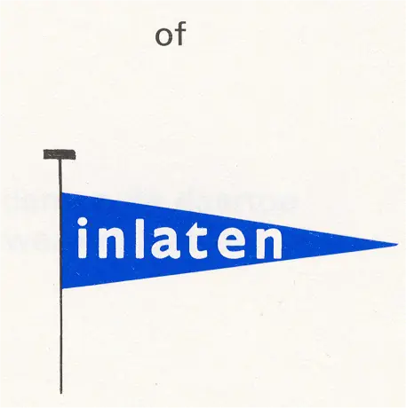 | |||
Opmerkingen: | |||
1. | Des daags kunnen hetzij de dagtekens, hetzij de lichten, hetzij beide worden gebruikt. | ||
2. | De vlaggen en wimpels kunnen worden vervangen door borden van dezelfde vorm. |